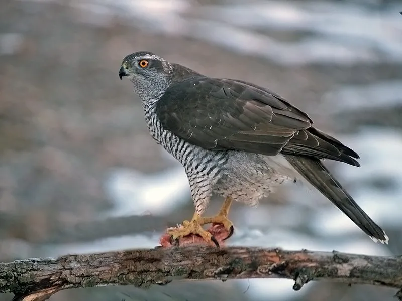

鸟类 · 动物界
苍鹰 Accipiter gentilis

林间猛禽，翅短尾长、眼周白色眉纹明显，飞行灵活善于在密林中追击野兔和雉类，是传统鹰猎名鸟。
- 分类
- 门脊索动物门纲鸟纲目鹰形目科鹰科属鹰属
- 栖息环境
- 针阔混交林、阔叶林和山地森林，巢多筑于高大乔木的树冠层
- 地理分布
- 欧亚大陆和北美森林地带，中国东北、华北、西北及西南山区有分布
- 保护级别
- IUCN 无危（LC）；中国国家二级保护动物
物种志
苍鹰雌鸟体长 58–69 cm，雄鸟较小，体长 46–57 cm；雌鸟体重约 860–1600 g，雄鸟约 630–1100 g；翼展 89–127 cm。成鸟背部灰褐色，腹部密布灰色横纹，眼周有白色眉纹，头顶深色，黄色的眼睛和蜡膜十分锐利。它的翅膀短而圆，尾羽较长，适合在林木间穿行。
苍鹰分布于欧亚大陆和北美的森林地带，中国东北、华北、西北和西南山区都有繁殖记录，北方种群冬季南迁。它们主要捕食野兔、雉类、松鼠和其它鸟类，常在林间低空快速追击，也会在地面突然伏击。繁殖期在高大乔木上营巢，每窝产卵 2–4 枚，孵化约 35–38 天。由于过去常被捕捉用于鹰猎，野生种群受到影响，中国将其列为国家二级保护动物。
形态与习性
- 食性野兔、雉类、松鼠和其它鸟类
- 体长雌鸟 58–69 cm，雄鸟 46–57 cm
- 体重雌鸟 860–1600 g，雄鸟 630–1100 g
- 翼展89–127 cm
- 繁殖每窝 2–4 枚卵，孵化约 35–38 天
- 寿命野外约 15 年
- 习性在密林中低空快速追击，也会在地面伏击
趣味知识
- 苍鹰眼周的白色眉纹十分醒目，是辨认它的重要特征。
- 它的翅膀短而圆、尾羽长，能在密林中灵活地急转弯追击猎物。
- 苍鹰是传统鹰猎中备受推崇的猛禽，训练后可以捕猎野兔和雉鸡。
- 雌鹰比雄鹰大得多，能捕杀更大的猎物。